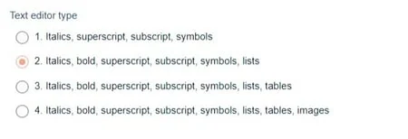
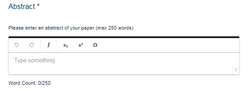
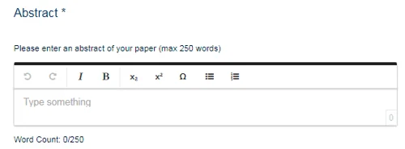
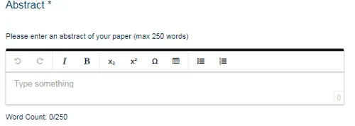
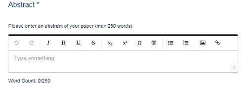

Text editor types
For event organisersNot an organiser?
When creating or editing questions that require longer text responses - eg for abstracts or biographies - you can select different text editor types, depending on your requirements.#
Go to Event dashboard → Abstract Management → Submissions → Forms & Setup
The default abstract question is an example of a formatted text editor quesion.
The options are below, with formatting options listed.
Text boxes on forms will appear as below for each option.

Type 1 permits italics, superscript, subscript and symbols.

Type 2 permits italics, bold, superscript, subscript, symbols and lists (bullet points and numbered).

Type 3 permits italics, bold, superscript, subscript, symbols and lists (bullet points and numbered) and tables.

Type 4 permits italics, bold, superscript, subscript, symbols and lists (bullet points and numbered), tables and images.

When answering long text questions, usually for abstracts, we always recommend submitters copy and paste from WORD or similar, for formatting consistency.

Common questions#
Can submitters include images and tables in their abstract submission?#
You can set up the abstract question to accept different text editor types.
We always advise copying and pasting abstracts from WORD or any text editor program, to the abstract field.
Didn't solve it? Ask our support team
No question is too small, and there's no charge for asking. Raise a ticket and someone who knows the software will pick it up.
Did this page solve it?
Thanks — this helps us fix it.